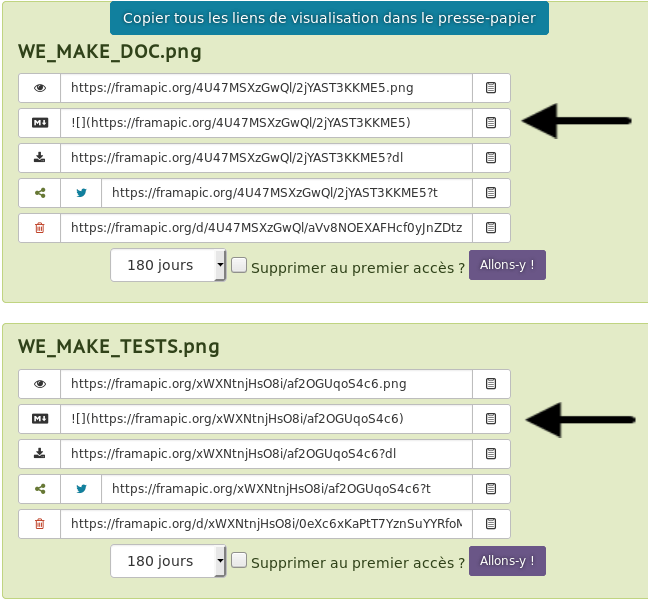
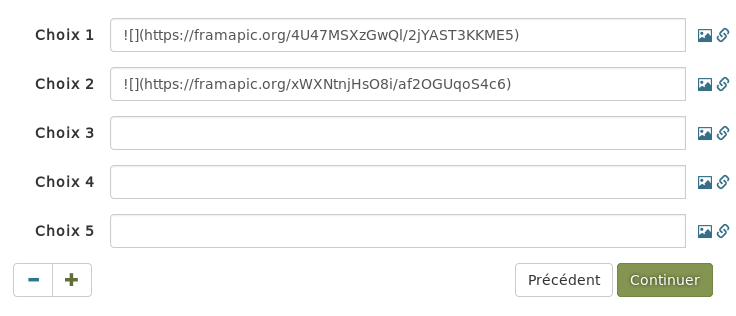
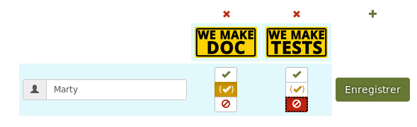

Astuces #
Intégrer des images à un Framadate #
Framadate classique permet d’insérer des images pour faire un sondage. Pour cela, il faut que les images soient déjà en ligne. Si elles sont sur votre ordinateur, vous devez les mettre sur un hébergeur d’images. Dans notre exemple, celui-ci sera Lutim.
Sur Lutim :
- cliquez sur Cliquez pour utiliser le navigateur de fichier
- sélectionnez les photos à insérer (maintenez la touche
ctrlen cliquant sur les photos pour en sélectionner plusieurs) - cliquez sur Ouvrir pour les envoyer sur Framapic
Vous obtenez alors les liens vers vos photos. Les liens utiles pour Framadate sont ceux fléchés :

En copiant ces liens et en les collant dans Framadate :

Vous obtenez l’affichage des images :

Intégrer un Framadate dans un site #
Pour afficher un Framadate directement dans un site vous pouvez utiliser un code HTML iframe : <iframe src="https://date.pcet.link/lien-public" width="100%" height="700px" />
src=""doit contenir le lien public de votre Framadatewidth=""est la largeur que doit prendre le framadate dans votre page (100%signifie qu’il prendra toute la largeur de la page)height=""est la hauteur ; vous pouvez utiliser des pixels (comme ci-dessus) ou des pourcentages (90%par exemple)